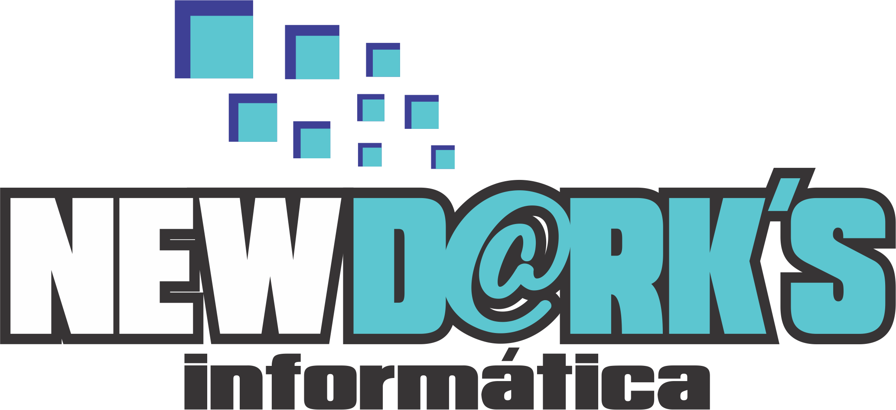

<nav class="navbar fixed-top navbar-toggleable-md navbar-light" id="mainNav">
  <button class="navbar-toggler navbar-toggler-right" type="button" data-toggle="collapse" data-target="#navbarExample" aria-controls="navbarExample" aria-expanded="false" aria-label="Toggle navigation">
      Menu <i class="fa fa-bars"></i>
  </button>
  <div class="container">
    <a class="navbar-brand" href="#page-top">
      
    </a>

    <div class="collapse navbar-collapse" id="navbarExample">
      <ul class="navbar-nav ml-auto">
        <li class="nav-item">
          <a class="nav-link" href="#about">Quem Somos?</a>
        </li>
        <li class="nav-item">
          <a class="nav-link" href="#address">Endereço</a>
        </li>
        <li class="nav-item">
          <a class="nav-link" href="#certification">Certificação Digital</a>
        </li>
        <li class="nav-item">
          <a class="nav-link" href="#topics">Soluções</a>
        </li>
        <li class="nav-item">
          <a class="nav-link" href="#contact">Contato</a>
        </li>
      </ul>
    </div>
  </div>
</nav>
